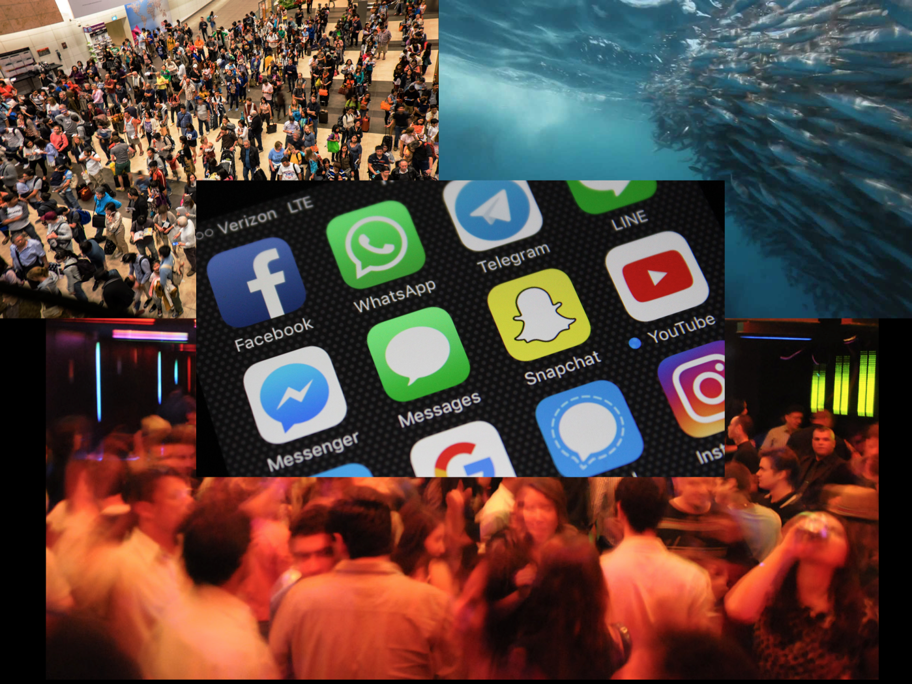
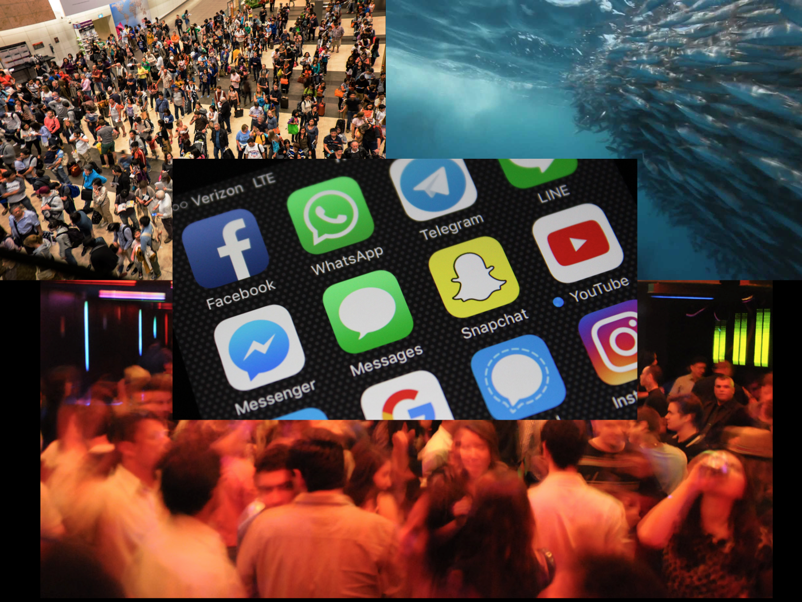
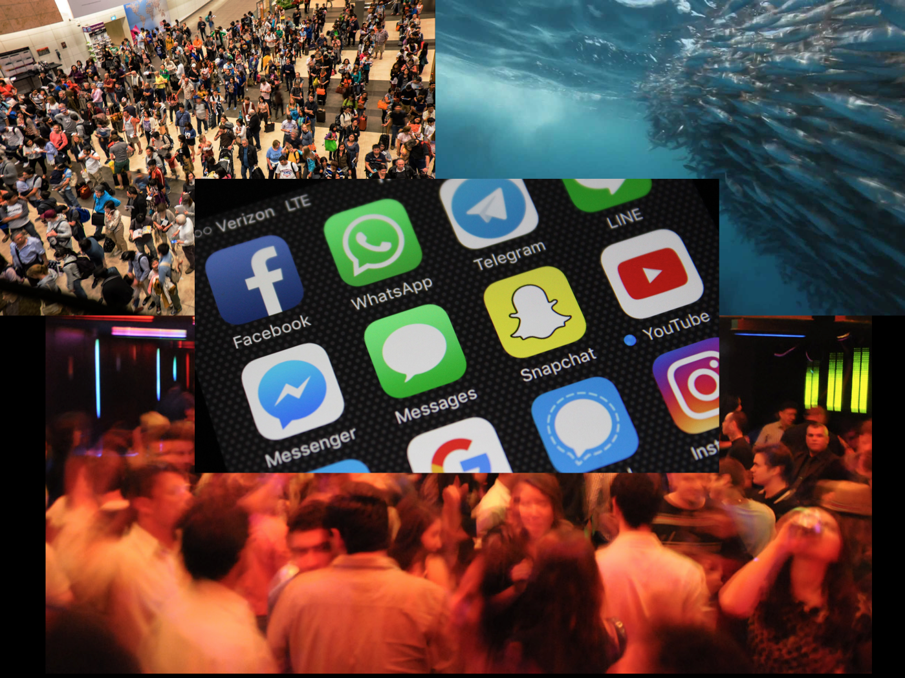

Title: " Working Title "
links to information from interweb
Interactive AR? | VR? installation room with physical Objects: oil paintings? | wooden sculptures?
Dimensions: ????
Pros : Deep Learning nuerals nets:" Higher levels of abstraction empower people to solve problems in less time and knowledge, where the idea and the data become the central point, not the effort. " - Lex Fridman
Cons: the user is really unaware on how the it works on the back end. Apps, such as social media platforms are optimized to keep the user on the app for longer periods of time.
Skeuomorphism is a term most often used in graphical user interface design to describe interface objects that mimic their real-world counterparts in how they appear and/or how the user can interact with them. A well-known example is the recycle bin icon used for discarding files. Skeuomorphism makes interface objects familiar to users by using concepts they recognize. Skeuomorphism is related to what ecological psychologist James Gibson termed “affordances.” Affordances refer to action possibilities of objects or other features of the environment. The most commonly cited examples of affordances include door handles and push buttons; their physical designs inform users that they can be rotated or pushed. Skeuomorphism represents affordances in digital user interfaces. It fits with our natural interpretation of objects—but in a digital world. Skeuomorphism’s use in making interfaces more familiar and thus easier to use stems from the early days of computing and mobile computing. For instance, early versions of Apple’s mobile operating system, iOS, used skeuomorphism heavily across its user interface (e.g., buttons resembling glossy ‘real’ buttons, photos with white borders looking like physical photographs, etc.). Skeuomorphism in iOS was widely regarded as part of the reason it was so intuitive to use by people who had never used a touch-based smartphone before. It has been widely debated, however, whether users have become so accustomed to interacting with graphical user interfaces that skeuomorphism is no longer necessary. Opponents of skeuomorphism argue that natural-looking objects can make an interface look cluttered and that some of the objects mimicked in skeuomorphism have become obsolete and meaningless to users (e.g., the floppy disk for the “Save” action). Proponents, on the other hand, argue that humans can never become as accustomed to the digital world as we are to the physical world—so, simple skeuomorphism will continue to be helpful.
